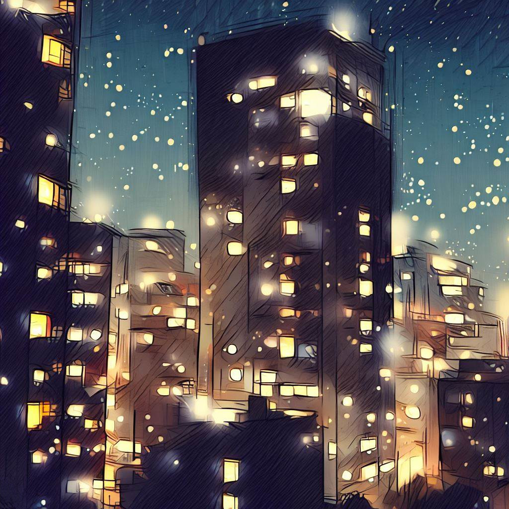
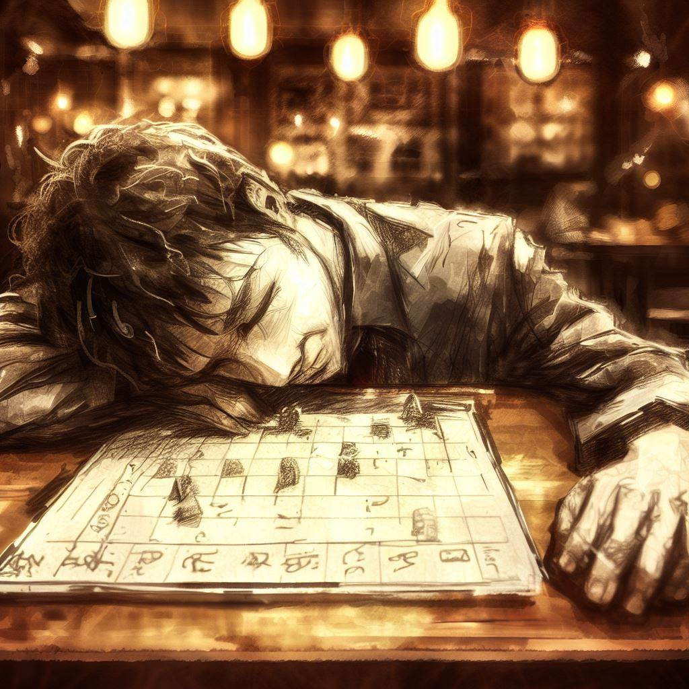

Komayo: ສຽງສະທ້ອນຄວາມລຶກລັບຂອງເກມ Ogi
ຂ້າພະເຈົ້າຢາກໃຊ້ເວລາເລັກນ້ອຍເພື່ອສະແດງຄວາມຮູ້ບຸນຄຸນກັບ Komayo ສໍາລັບການແນະນໍາຂ້ອຍໃຫ້ກັບເກມຍຸດທະສາດທີ່ຫນ້າປະທັບໃຈນີ້. ສະເໜ່ແລະຄວາມລຶກລັບຂອງມັນເຮັດໃຫ້ຄວາມປະທັບໃຈອັນຍືນຍົງໃນຊີວິດຂອງຂ້ອຍ. ສິ່ງທີ່ຕໍ່ໄປນີ້ແມ່ນເລື່ອງຂອງກອງປະຊຸມຂອງພວກເຮົາ, ເປັນຄວາມຊົງຈໍາອັນລ້ໍາຄ່າທີ່ຂ້ອຍຕ້ອງການແບ່ງປັນຜ່ານສາຍເຫຼົ່ານີ້.
ຫນີຫ້ອງການ
ຫຼັງ ຈາກ ມື້ ທີ່ ຍາວ ນານ ໄດ້ ໃຊ້ ເວ ລາ ໃນ ບັນ ຍາ ກາດ ເປັນ ຫມັນ ແລະ ມີ ລົດ ຊາດ ຂອງ ຫ້ອງ ການ ຂອງ ຂ້າ ພະ ເຈົ້າ, ໃນ ຕອນ ທ້າຍ ຂອງ ການ ລໍ ຖ້າ ຍາວ ຂອງ ມື້ ໄດ້ ມາ ເຖິງ ທີ່ ສຸດ, ຄື ການ ປົດ ປ່ອຍ. ມື້ນັ້ນໄດ້ຫັນໄປສູ່ຄວາມມືດ, ແລະຂ້າພະເຈົ້າໄດ້ປະໄວ້ທາງຫລັງຂອງເຄື່ອງປັບອາກາດທີ່ເຢັນ, ເຢັນເພື່ອເອົາຕົວຂອງມັນເອງເຂົ້າໄປໃນສາຍລົມເຢັນໃນໂອຊາກາທີ່ອ່ອນໂຍນ.
ຄວາມວຸ້ນວາຍໃນຍາມກາງເວັນ, ບໍ່ມີຄວາມໝາຍຄືກັບວ່າໜັກໜ່ວງ, ຄ່ອຍໆຈາງລົງ, ເຮັດໃຫ້ຄວາມງຽບສະຫງົບໃນຍາມກາງຄືນ. ຄວາມຄິດຂອງຂ້າພະເຈົ້າ, ວຸ້ນວາຍກັບວຽກງານທີ່ບໍ່ເປັນໜ້າສົນໃຈຂອງມື້, ໄດ້ເລີ່ມແຈ່ມແຈ້ງຂຶ້ນຕໍ່ໜ້າຄວາມໜາແໜ້ນທີ່ເຕັມໄປດ້ວຍດວງດາວ ແລະ ຄວາມສະຫງົບງຽບຂອງເມືອງ.

ຂ້າພະເຈົ້າໄດ້ປ່ອຍໃຫ້ຕົນເອງໄດ້ຮັບການນໍາພາໂດຍຜ່ານຊອຍ tangled ຂອງເມືອງ. monotony ຂອງມື້ເບິ່ງຄືວ່າຈະລະລາຍໄປທົ່ວທຸກແຈ, ແທນທີ່ດ້ວຍຄວາມລຶກລັບຂອງສິ່ງທີ່ບໍ່ຮູ້. ຮູບຊົງທີ່ອ່ອນນຸ້ມ, ຕ້ອນຮັບຕຶກສູງພາຍໃຕ້ຜ້າມ່ານຕອນກາງຄືນ, ແສງໄຟກະພິບຂອງພວກມັນຕໍ່ກັບທ້ອງຟ້າສີມັງ, ກົງກັນຂ້າມກັບການມີໜ້າຢ້ານກົວຂອງພວກມັນໃນແຕ່ລະມື້.
ບັນຍາກາດອັນຄຶກຄື້ນຂອງບັນດາຮ້ານຂາຍເຄື່ອງ, ກິ່ນຫອມຂອງຮ້ານອາຫານຕາມຖະໜົນ ແລະ ສຽງຈົ່ມຂອງການສົນທະນາຕອນກາງຄືນໄດ້ສ້າງພາບພົດຂອງຕົວເມືອງທີ່ຕື່ນເຕັ້ນ. ຈິດໃຈຂອງຂ້ອຍ, ເຖິງແມ່ນວ່າຈະໝົດແຮງ, ໄດ້ຊອກຫາສິ່ງທ້າທາຍທາງປັນຍາ, ເປັນການລົບກວນຈາກຄວາມກັງວົນຂອງມື້. ມັນແມ່ນຕອນນັ້ນທີ່ຂ້ອຍເຫັນປ້າຍທີ່ສຸຂຸມ, Bar de la Régence, ສະຖານທີ່ທີ່ມີຊື່ສຽງບ່ອນທີ່ນັກຫຼິ້ນ shogi ທີ່ມີພອນສະຫວັນແລະສະຫງ່າລາສີທີ່ສຸດຂອງເວລາຂອງພວກເຂົາເຄີຍປະເຊີນຫນ້າກັນ.
ເຊື່ອງໄວ້ຢູ່ໃນຊອຍທີ່ງຽບໆ, ສະຖານທີ່ສັກສິດນີ້ໄດ້ສະເຫນີຕົວມັນເອງໃຫ້ກັບຂ້ອຍ, ກະຊິບຢູ່ໃນໃຈຂອງຂ້ອຍເຖິງການໂທຫາເກມທີ່ອ່ອນໂຍນ. ດ້ວຍຄວາມລຶກລັບແລະຄວາມຢາກຮູ້.
ພັກລັດ
ແສງໄຟອ່ອນໆຂອງ Bar de la Régence ຕ້ອນຮັບຂ້ອຍ, ບັນຍາກາດອັນອົບອຸ່ນຂອງມັນເຮັດໃຫ້ຄວາມຮູ້ສຶກສະຫງົບງຽບ. ຄວາມສະຫງົບຂອງສະຖານທີ່ໄດ້ຖືກ permeated ໂດຍຫຼັກສູດຂອງເກມຈໍານວນຫຼາຍຂອງ shogi, ບໍ່ຕ້ອງສົງໃສ enlivened ຕອນແລງຂອງຫຼາຍລຸ້ນຂອງຜູ້ນໃນການຊອກຫາຂອງການຫລົບຫນີ.
ກ່ອນທີ່ຈະ immersing ຕົນເອງຢູ່ໃນໂລກຂອງເກມ, ຂ້າພະເຈົ້າໄດ້ສັ່ງຈອກ sake ຢູ່ counter ໄດ້. ພື້ນ parquet ວັດຖຸບູຮານປະທ້ວງຢ່າງອ່ອນໂຍນຢູ່ໃຕ້ຕີນຂອງຂ້າພະເຈົ້າ, ໃນຂະນະທີ່ຕາຂອງຂ້າພະເຈົ້າປັບກັບແສງສະຫວ່າງ hushed. ສຽງອ່ອນຂອງຊິ້ນສ່ວນ shogi, ສຽງກະຊິບຂອງການສົນທະນາແລະສຽງດັງຂອງແຟນໄດ້ເພີ່ມຄວາມລຶກລັບໃຫ້ກັບບັນຍາກາດ. ກິ່ນຫອມຂອງໄມ້ບູຮານ, ປະສົມກັບຂອງທູບ, ບັນເທົາຄວາມຮູ້ສຶກຂອງຂ້າພະເຈົ້າແລະກະກຽມຂ້າພະເຈົ້າສໍາລັບການມີສ່ວນຮ່ວມທາງປັນຍາທີ່ຈະມາເຖິງ.
ຜູ້ອຸປະຖໍາ, ຜູ້ຊາຍແລະແມ່ຍິງທຸກໄວ, passionately indulged ກັບເກມ shogi ຂອງເຂົາເຈົ້າ. ແຕ່ລະຄົນສະແດງອອກໃນລັກສະນະຂອງຕົນເອງຄວາມເຄັ່ງຕຶງ, ຄວາມສຸກຫຼືຄວາມຜິດຫວັງທີ່ກ່ຽວຂ້ອງກັບການສັກຢາແຕ່ລະຄົນ. ມັນເປັນຍຸດທະສາດບະເລທີ່ມິດງຽບ ແລະໄດ້ເປີດເຜີຍຕໍ່ໜ້າຕາຂອງຂ້າພະເຈົ້າ.
ຊອກຫາ opponent ສໍາລັບຕອນແລງ, ຕາຂອງຂ້ອຍຖືກຈັບໄດ້ໂດຍແມ່ຍິງນັ່ງຢູ່ຄົນດຽວຢູ່ໃນໂຕະທີ່ງຽບສະຫງົບ. ການປະກົດຕົວທີ່ງຽບສະຫງົບຂອງນາງແລະຄວາມງາມທີ່ອ່ອນໂຍນເຮັດໃຫ້ຄວາມຢາກຮູ້ຂອງຂ້ອຍ. ດ້ວຍບາດກ້າວທີ່ຕັ້ງໃຈແຕ່ສຸຂຸມ, ຂ້າພະເຈົ້າໄດ້ເຂົ້າໄປໃກ້, ວາດພາບດ້ວຍຮອຍຍິ້ມທີ່ສຸພາບຮຽບຮ້ອຍ ແລະ ໃຫ້ລາວຫລິ້ນເກມ.

ບົດຮຽນກາງຄືນ
ການຕອບສະ ໜອງ ຂອງເພິ່ນຕໍ່ຂໍ້ສະ ເໜີ ຂອງຂ້ອຍແມ່ນຮອຍຍິ້ມທີ່ເຮັດໃຫ້ມີໃບ ໜ້າ ຂອງລາວ, ເປັນການຍອມຮັບຢ່າງເຄັ່ງຄັດທີ່ບໍ່ຕ້ອງການ ຄຳ ເວົ້າ.
ດ້ວຍຄວາມເມດຕາທີ່ບໍ່ຄາດຄິດ, ນາງໄດ້ເປີດເຜີຍກະດານເກມ, ກ່ອນໜ້ານີ້ໄດ້ເຊື່ອງໄວ້ພາຍໃຕ້ຜ້າໄໝ. ການແນມເບິ່ງຂອງຂ້ອຍທັນທີທີ່ຈັບໄດ້ຢູ່ເທິງພື້ນຜິວທີ່ຫຼິ້ນໂດຍບໍ່ຄາດຄິດ, ເບິ່ງຄືວ່າມີຄວາມຫນາແຫນ້ນກວ່າມາດຕະຖານ. ມັນບໍ່ແມ່ນ shogiban ແບບດັ້ງເດີມທີ່ຂ້ອຍເຄີຍເຫັນ, ແຕ່ເປັນຕາຂ່າຍໄຟຟ້າສີ່ຫຼ່ຽມສີ່ຫຼ່ຽມທີ່ມີ 8 ສີ່ຫຼ່ຽມຢູ່ຂ້າງ. ກ່ອນທີ່ຂ້ອຍຈະບອກຄວາມແປກໃຈຂອງຂ້ອຍໄດ້, ຄົນແປກໜ້າທີ່ສະຫງ່າງາມໄດ້ເປັນຜູ້ນຳພາໃນການລຶບລ້າງຄວາມສັບສົນຂອງຂ້ອຍ, ສຽງຂອງນາງປົນກັບອາກາດອ້ອມຂ້າງຄືກັບລົມລະດູຮ້ອນທີ່ອ່ອນໂຍນ.
"ມັນເປັນ ogi, ເກມຂອງກະສັດ," ນາງປະກາດຢ່າງໝັ້ນໃຈ. "ພວກເຮົາແຕ່ລະຄົນມີ 18 ຊິ້ນທີ່ກໍານົດໄວ້ຢູ່ທີ່ນັ້ນເພື່ອເລີ່ມຕົ້ນເກມ." ການເບິ່ງທີ່ຂົມຂື່ນເຮັດໃຫ້ຕາຂອງນາງຂຶ້ນໃນຂະນະທີ່ນາງເປີດເຜີຍລາຍລະອຽດທີ່ ໜ້າ ສົນໃຈເຫຼົ່ານີ້.

ນາງກ່າວວ່າ "ໃນກະດານ silhouettes ຂອງ chessboard ນີ້, ຄົນ ໜຶ່ງ ໂດດເດັ່ນ ສຳ ລັບຄວາມສະຫງ່າງາມທີ່ເຫັນໄດ້ຊັດ," ນາງໄດ້ລະບຸໄວ້, ຊີ້ໄປຫາສ່ວນກາງຂອງຄວາມສະຫງ່າງາມໂດຍສະເພາະ. "ນີ້ແມ່ນເຈົ້າຍິງ. ປະດັບດ້ວຍກຽດສັກສີຂອງຄົນໂງ່ແລະອິດສະລະພາບທີ່ບໍ່ມີຂອບເຂດຈໍາກັດຂອງນັກຂີ່ມ້າ, ນາງໄດ້ຮັກສາຄວາມດີແລະມີອໍານາດເຫນືອ ogiban, ລົມຫາຍໃຈຂອງ romanticism ເຂົ້າໄປໃນການປ່ຽນແປງທີ່ທັນສະໄຫມຂອງ shogi."
ຮອຍຍິ້ມຂອງລາວກວ້າງຂຶ້ນເມື່ອເຫັນຄວາມແປກໃຈຂອງຂ້ອຍ. ແສງເຫຼື້ອມເປັນຕາເຍາະເຍີ້ຍສ່ອງໃສ່ຕາຂອງລາວ, ຄວາມຊົ່ວຊ້າທີ່ພຽງແຕ່ເພີ່ມຄວາມລຶກລັບທີ່ຢູ່ອ້ອມຮອບລາວ. ນາງໄດ້ເລີ່ມຈັດວາງຊິ້ນສ່ວນຕ່າງໆຢູ່ເທິງກະດານ, ນິ້ວມືທີ່ຄ່ອງແຄ້ວແລະຊັດເຈນຂອງນາງເຮັດໃຫ້ສະຫນາມຮົບໃນອະນາຄົດຂອງພວກເຮົາ.
ໃນຂະນະທີ່ນາງກໍາລັງຕັ້ງຊິ້ນສ່ວນ, ຂ້າພະເຈົ້າສັງເກດເຫັນຄວາມແຕກຕ່າງອີກຢ່າງຫນຶ່ງ: ຫໍຄອຍທີ່ຢືນຢູ່ມຸມຂອງ ogiban. ນາງອະທິບາຍວ່າ "ຫອກແບບດັ້ງເດີມຖືກແທນທີ່ດ້ວຍຫໍຄອຍເຫຼົ່ານີ້," ນາງໄດ້ອະທິບາຍຄືກັບວ່າອ່ານຄວາມຄິດຂອງຂ້ອຍ, "ນໍາເອົາຂະຫນາດພິເສດໃຫ້ກັບການແລ່ນຂອງພວກເຮົາ."
ຕ່ອນນີ້ໄດ້ຖືກວາງອອກ, ທຸກໆ rook, ທົ່ວໄປ, ທຸກ pawn lined ຂຶ້ນໃນປະສົມກົມກຽວທີ່ສົມບູນແບບ. ຄາດວ່າຈະມີການຕໍ່ສູ້ທີ່ຈະມາເຖິງ, ຂ້າພະເຈົ້າໄດ້ພົບເຫັນຕົວເອງຢ່າງບໍ່ສາມາດຕ້ານທານກັບສິ່ງປິດສະຫນາທີ່ເປີດເຜີຍໃຫມ່ນີ້, ເຮັດໃຫ້ທຸກສິ່ງທີ່ຫນ້າປະທັບໃຈຫຼາຍຂຶ້ນໂດຍເງົາສີທອງຂອງຊິ້ນສ່ວນແລະການແນມເບິ່ງທີ່ສະຫວ່າງຂອງສັດຕູທີ່ລຶກລັບຂອງຂ້ອຍ.
ການທົດລອງຂອງພຣະວິນຍານ
ໂມງທີ່ຖືກຕີໃສ່ຈຸດເວລາທີ່ຜ່ານໄປ, ໃນຂະນະທີ່ຄວາມງຽບສະຫງັດຂອງການສູ້ຮົບຖືກລົບກວນພຽງແຕ່ມີສຽງດັງເລັກໆນ້ອຍໆຢູ່ເທິງກະດານ. ອະທິການໄດ້ເຄື່ອນໄຫວດ້ວຍຄວາມຕັ້ງໃຈ, ນັກຮົບໄດ້ໂດດລົງຢ່າງກ້າຫານ, ແລະ ເຈົ້າຍິງໄດ້ຄອບງຳສະໜາມຮົບດ້ວຍປະສິດທິພາບທີ່ໜ້າປະທັບໃຈ. ຈັງຫວະທີ່ເກືອບບໍ່ສາມາດຮັບຮູ້ໄດ້ຂອງການຕໍ່ສູ້ເຕັມໄປທົ່ວຫ້ອງ, ເຮັດໃຫ້ມັນມີຄວາມເຄັ່ງຕຶງທີ່ເຫັນໄດ້ຊັດເຈນ.
ດ້ວຍຄວາມຊຳນານທີ່ບໍ່ໜ້າສົນໃຈ, ສັດຕູທີ່ມີຄວາມວິຕົກກັງວົນຂອງຂ້າພະເຈົ້າໄດ້ຊີ້ນຳຊິ້ນສ່ວນຂອງລາວ. ຜູ້ທີ່ຖືກຈັບ, ແທນທີ່ຈະຖືກກໍາຈັດ, ໄດ້ຖືກນໍາມາໃຫມ່ຢ່າງຊໍານິຊໍານານ, ໂດດດ່ຽວຢູ່ຫລັງສາຍຂອງຂ້ອຍ, ສັກຢາການປ່ຽນແປງການເຄື່ອນໄຫວເຂົ້າໄປໃນການສູ້ຮົບ. ແຕ່ລະການເຄື່ອນໄຫວແມ່ນບົດຮຽນໃນຍຸດທະວິທີ, ແຕ່ລະຊິ້ນສ່ວນທີ່ເຊື່ອມຕໍ່ກັບອີກອັນຫນຶ່ງໂດຍພັນທະບັດທີ່ເບິ່ງບໍ່ເຫັນໄດ້ແສ່ວດ້ວຍຄວາມລະມັດລະວັງການຜ່າຕັດເກືອບ.
ຂ້າພະເຈົ້າໄດ້ຍຶດໝັ້ນຕໍ່, ຈັບມືຢ່າງຕັ້ງໃຈຢ່າງແຂງແຮງ, ປ້ອງກັນການໂຈມຕີຂອງລາວດ້ວຍການປ້ອງກັນຢ່າງຮອບຄອບ. ແຕ່ການຕັດສິນໃຈແຕ່ລະຄົນເບິ່ງຄືວ່າຈະດຶງດູດເອົາພະລັງງານຂອງຂ້ອຍ, ແຕ່ລະການເຄື່ອນໄຫວກາຍເປັນຫນັກແລະຫນັກກວ່າທີ່ຈະປະຕິບັດ. ໜັງຕາຂອງຂ້ອຍເລີ່ມມີນໍ້າໜັກລົງ, ເມື່ອຍລ້າພະຍາຍາມເອົາດິນ.
ແລະໃນຂະນະທີ່ຂ້າພະເຈົ້າພະຍາຍາມຮັກສາຕາຂອງຂ້າພະເຈົ້າເປີດ, ນອນ, ສັດຕູ stealthy, ໄດ້ຄອບຄອງ. ຮ່າງກາຍຂອງຂ້າພະເຈົ້າໄດ້ເຮັດໃຫ້ຄວາມອິດເມື່ອຍ, ແສງແຖບເຕັ້ນລໍາຕໍ່ຫນ້າຕາທີ່ມືດມົວຂອງຂ້າພະເຈົ້າ. ຂ້າພະເຈົ້າໄດ້ຕົກເຂົ້າໄປໃນຄວາມມືດອັນງຽບສະຫງົບ, ຮູບພາບສຸດທ້າຍທີ່ຝັງຢູ່ໃນຄວາມຊົງຈຳຂອງຂ້າພະເຈົ້າແມ່ນຮອຍຍິ້ມທີ່ມີໄຊຊະນະຂອງຜູ້ປໍລະປັກທີ່ລຶກລັບຂອງຂ້າພະເຈົ້າ, ກະພິບກະພິບຄືດວງຈັນທີ່ຫ່າງໄກຢູ່ໃນທ້ອງຟ້າທີ່ມືດມົວ.

ສຽງສະທ້ອນຂອງອາລຸນ
ເວລາເບິ່ງຄືວ່າໄດ້ລະເຫີຍໄປ, ກືນເຂົ້າກັບຄວາມມືດທີ່ປົກຄຸມຈິດໃຈຂອງຂ້ອຍ. ການຫັນປ່ຽນໄປສູ່ຄວາມມືດແມ່ນລຽບງ່າຍ ແລະບໍ່ມີສຽງດັງ, ເຮັດໃຫ້ຂ້ອຍຕ້ອງໄປຊອກຫາໝອກທີ່ໜ້າງຶດງໍ້. ຈິດໃຈຂອງຂ້າພະເຈົ້າ thrashed ໃນທະເລຂອງຄວາມສັບສົນ, ດີ້ນລົນທີ່ຈະພົ້ນອອກຈາກຄວາມມືດ.
ເໝືອນດັ່ງເຮືອທີ່ຫຼົງຫາຍໃນຍາມກາງຄືນ, ໃນທີ່ສຸດຂ້າພະເຈົ້າກໍພົບທາງກັບຄືນສູ່ແສງສະຫວ່າງຂອງມື້. ຕາຂອງຂ້າພະເຈົ້າໄດ້ເປີດໄປໃນຫ້ອງທີ່ເກືອບບໍ່ມີການປ່ຽນແປງ, ອາບນ້ໍໃນແສງສະຫວ່າງຂອງອາລຸນ. ogiban ໄດ້ຢືນຢູ່ໃນຂະນະທີ່ຂ້າພະເຈົ້າໄດ້ປະໄວ້, ເປັນພະຍານທີ່ງຽບສະຫງົບຂອງການສູ້ຮົບໃນຕອນກາງຄືນ. ຢ່າງໃດກໍຕາມ, ບ່ອນນັ່ງຂອງ opponent ຂອງຂ້າພະເຈົ້າແມ່ນຫວ່າງເປົ່າ, ກິ່ນອາຍອັນລຶກລັບຂອງຍິງຫນຸ່ມໄດ້ຫາຍໄປຄືກັບຄວາມຝັນໃນຍາມເຊົ້າ.
ນໍ້າໜັກຂອງການບໍ່ຢູ່ຂອງລາວໄດ້ຮູ້ສຶກວ່າ, ເປັນຄວາມຫວ່າງເປົ່າທີ່ບໍ່ມີວັນກໍານົດທີ່ເຮັດໃຫ້ອາກາດຫນັກ, ຫ້ອງງຽບລົງ. ການແນມເບິ່ງຂອງຂ້ອຍໄດ້ເລື່ອນຂ້າມ ogiban ແລະຕັ້ງຢູ່ເທິງແຜ່ນເຈ້ຍທີ່ພັບຢ່າງເປັນລະບຽບຢູ່ຂ້າງກະດານເກມ.
ຄໍາດຽວໄດ້ຖືກຈາລຶກຢູ່ທີ່ນັ້ນ, "ຂໍຂອບໃຈ", ພ້ອມກັບຊື່ - "Komayo". ລາຍເຊັນທີ່ສະຫງ່າງາມ, ເປັນເຄື່ອງໝາຍສຸດທ້າຍຂອງການພົບພໍ້ກັນເທື່ອນີ້ ແລະຍັງໂດດເດັ່ນ, ໄດ້ໃຊ້ເວລາຢູ່ທີ່ Bar de la Régence ຫຼີ້ນ ogi ກັບ Komayo ທີ່ຫຼົງໄຫຼ ແລະໜ້າສົນໃຈ.